Code
create_state_space <- \(nrow=3, ncol=3){
classname <- paste0(nrow,"x",ncol,".space")
S <- 0:(2^(ncol*nrow)-1)
purrr::map(S,~{
xmas3board(.x,dims = c(nrow,ncol))
})
}Based on prior notes and analysis it seems reasonable to assume that we should be able to train an RL model on several grid sizes. We will start with the smallest sizes and work our way up, considering the actual magnitude of the combinations, which rise rapidly:
It also seems that chess-like notation, which is more human readable, and thus more convenient for the researcher (i.e. me), adds minimal overhead in the parsing and scoring processes.
For the purposes of setting up the agent training for an \(m\times{n}\) board, we implemented the following functions.
create_state_space <- \(nrow=3, ncol=3){
classname <- paste0(nrow,"x",ncol,".space")
S <- 0:(2^(ncol*nrow)-1)
purrr::map(S,~{
xmas3board(.x,dims = c(nrow,ncol))
})
}This function returns a list of integers with the appropriate class (mostly for printing and debugging.)
This function generates an action space in chess notation given a grid on ncol and nrows.
create_action_space <-\(nrows=3, ncols=3){
my_cols <- LETTERS[1:ncols]
my_rows <- 1:nrows
A <- c()
# Vertical moves
for(.r in 1:(length(my_rows))){
for(.c in 1:(length(my_cols)-1)){
A <- c(A,
paste0(
my_cols[.c],my_rows[.r],
" to ",
my_cols[.c+1],my_rows[.r]
)
)
}
}
# Horizontal
for(.c in 1:(length(my_cols))){
for(.r in 1:(length(my_rows)-1)){
A <- c(A,
paste0(
my_cols[.c],my_rows[.r],
" to ",
my_cols[.c],my_rows[.r+1]
)
)
}
}
c(A,"Pass")
}This function takes as input a board B and a move (in chess notation). It makes the move and returns the resulting board.
make_move <- \(B, move){
# If no move is made the board remains unaltered
if(move == "Pass") return(B)
# Parse out move
M <- as.matrix(B)
m <- parse_move(move)
r1<-m$rs[1];r2<-m$rs[2];c1<-m$cs[1];c2<-m$cs[2]
tmp <- M[r2,c2]
M[r2, c2] <- M[r1,c1]
M[r1, c1] <- tmp
M |> adana::bin2int() |>
xmas3board(dims =attr(B, "dims") )
}This function takes as input a binary matrix and calculates the resulting score according to the rules of X-mas-3.
score_binary_board <-\(B){
if(!is.matrix(B)) B <- as.matrix(B)
# Magic numbers here are:
# 7,14,28 - three in a row/col
# 15, 30 - four in a row/col
# 31 - five in a row
rows <-
apply(B,1,function(x){
v <- paste0(x, collapse = "")
strtoi(v,2)
})
cols <-
apply(B,2,function(x){
v <- paste0(x, collapse = "")
strtoi(v,2)
})
totals <- c(cols,rows)
score <- sum(
sum(totals%in%c(7,14,28))*50,
sum(totals%in%c(15,30))*100,
sum(totals%in%c(31))*200
)
score
}These functions will allow us to create the input needed to train a Reinforcement Learning (RL) model.
We will attempt to train models for each of the grid-sized mentioned above. However, it is likely that not all sizes will converge. In fact, our prediction is that we will not make it past 3x6 ~ 6x3.
We start with a 3x3 grid. This should be sufficiently small that a machine learning algorithm will converge in short order and we are able to test the outcome before embarking on a more wide-ranging training activities.
A three by three board gives us a state-space of 512 possibilities. However, some proportion of the boards in this space will already have a winning combination on them, and should be excluded form the training because (a) they will not come up in play, as tiles are immediately removed when a scoring combination is found, and (b) there is logically no correct move on these boards. For example Board 56 has three touching tiles in column B.
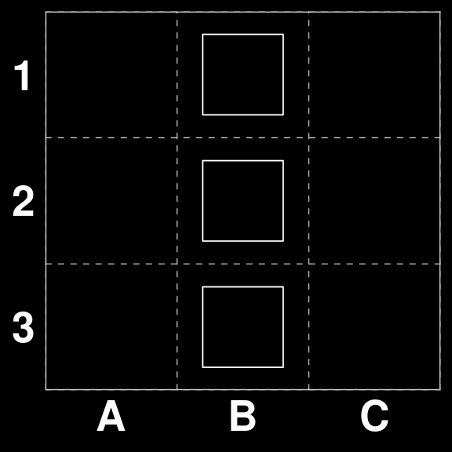
We will remove these from consideration by generating the action space, scoring each board and removing the ones that have a positive score.
S <- create_state_space(3,3)
my_scores <- purrr::map(S,score_binary_board) %>% unlist()
S <- S[my_scores==0] Which leaves us with 265 playable boards.
Our action space A is created using the functions from our package
A <- xmas3::create_action_space(3,3)
A |> paste(collapse = ", ") |> cat()A1 to B1, B1 to C1, A2 to B2, B2 to C2, A3 to B3, B3 to C3, A1 to A2, A2 to A3, B1 to B2, B2 to B3, C1 to C2, C2 to C3, PassWhich gives us a an A of length 13 .
The data for the modelling exercise was created by playing each possible move for each of the remaining S.
We then applied the Q-learning algorithm (Watkins and Dayan 1992) implemented in the open source ReinforcementLearning package (Proellochs and Feuerriegel 2020), with the standard default parameters (\(\alpha=.1,\gamma=.1, \epsilon=.1\)).
We can now test the model by asking it to play some boards where we know the correct play. For example \(S_{32}\) where there is a scoring move.
S[[32]]| · O · |
| · · O |
| · · O |# Read from cache
gatai <- readr::read_rds(here::here("models","q-learning-3x3.rds"))
gatai |> predict(S[32])[1] "B1 to C1"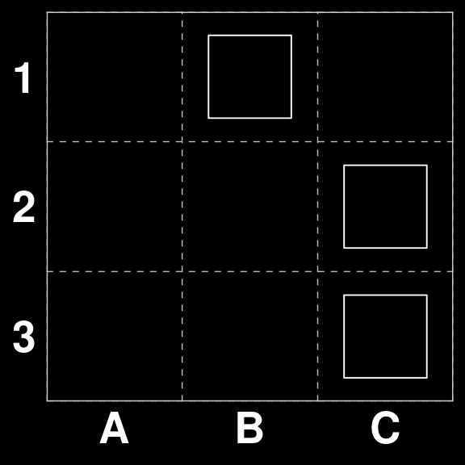
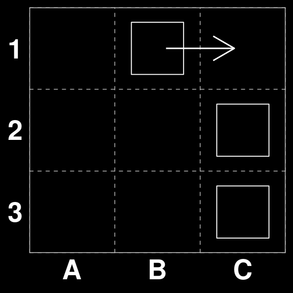
On the other hand \(S_{4}\) does not have a scoring move and should be passed. The same is true for \(S_{6}\)
S[[4]]
S[[6]]| · · · |
| · · O |
| · · O || · · O |
| · · · |
| · · O |gatai |> predict(c(S[4],S[6])) |> cat()Pass Pass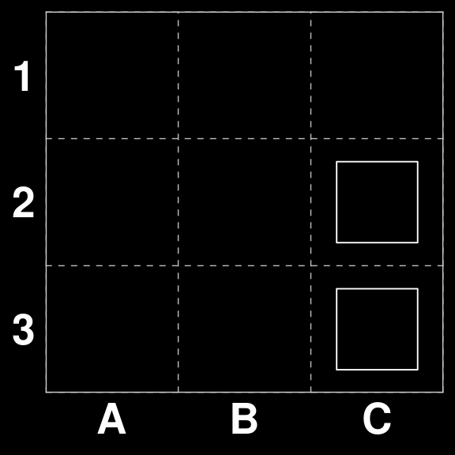
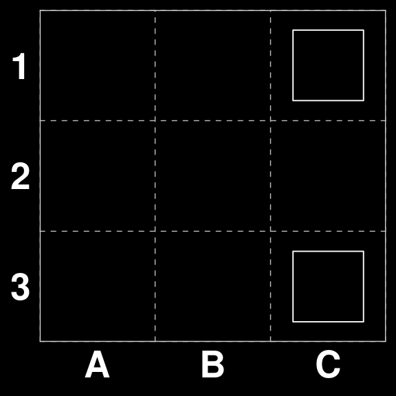
Board 263 is an interesting case. Since there are three moves that would score points. However two of them are strategically superior (A1 to A1 and C1 to C2), because they both guarantee that there is enough tiles left on the board to make a scoring move on the next round.
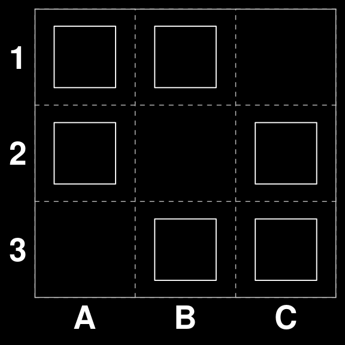
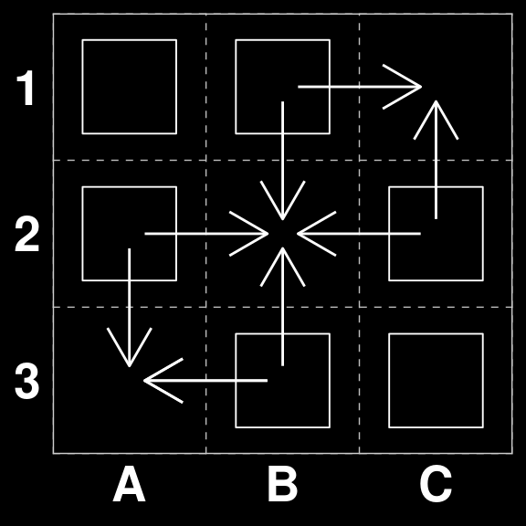
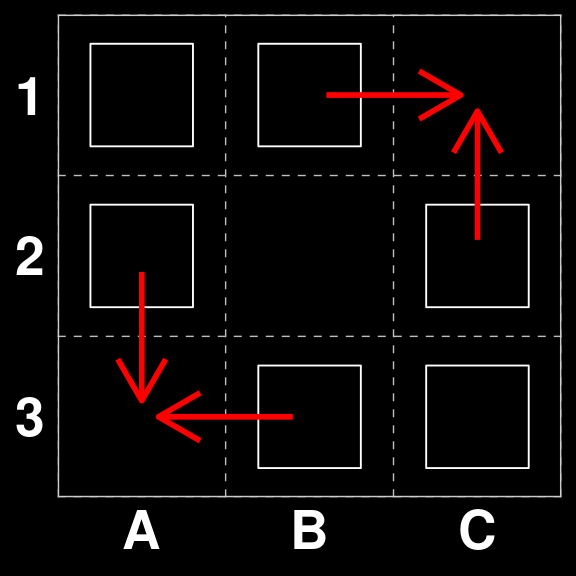
Let’s see what Gatai believes:
gatai |> predict(S[263])[1] "B1 to C1"So, one of the strongest moves available. However, we cannot be sure whether this was a random choice among scoring moves or the result of a strategic play. We can check this with another board.
In our original State space $_{259} does not have a directly scoring move, however, the correct move is A1 to B1, in preparatin for B1xC1 on the next round.
B <- xmas3board(259,c(3,3))
B| O · · |
| · · O |
| · · O |gatai |> predict(B[1])[1] "A1 to B1"So we see that Gatai is capable of making strategic moves as well.
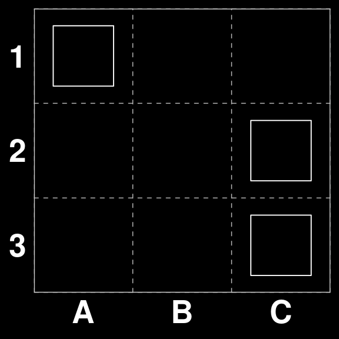
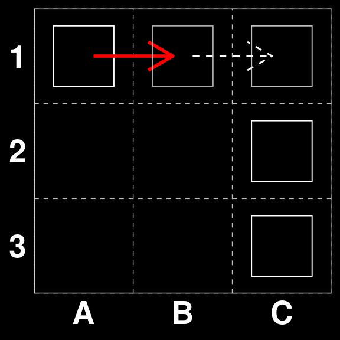
/\_/\
(⌐■_■ )
> ^ <Cool model.With the grid dimension chosen, we have \(2^{(3\times4)}=4096\), possibilities. This should still be within the realm of the possible given the resources available.
The action space \(A\) has a cardinality of 19.
The data for the modelling exercise was created by playing each possible move for each of the remaining S.
We trained the same type of model (Q-Learning) as before, again with the standard default parameters (\(\alpha=.1,\gamma=.1, \epsilon=.1\)). This model converged in just over 8 seconds.
Again we can now test the model by asking it to play some boards where we know the correct play. For example \(S_{32}\) where there is a scoring move.
Let’s do a spot_check.
# Read from cache
gatai <- readr::read_rds(here::here("models", "q-learning-3x4.rds"))
S[[32]]| · · O · |
| · · · O |
| · · · O |gatai |> predict(S[32])[1] "C1 to D1"Looks good. Let’s check a non-scoring one.
S[[33]]| · · O O |
| · · · · |
| · · · · |gatai |> predict(S[33])[1] "Pass"So, it seems we have an somewhat intelligent model. Let’s see if it can think strategically at this level.
B <- xmas3board(2051 ,c(3,4))
B| O · · · |
| · · · O |
| · · · O |gatai |> predict(B[1])[1] "A1 to B1"So, apparently looking three moves ahead.
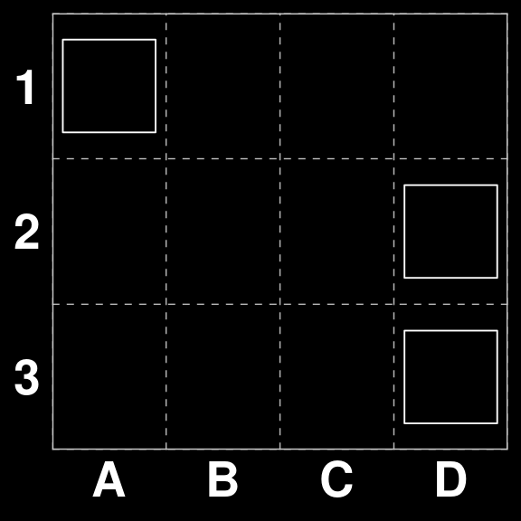
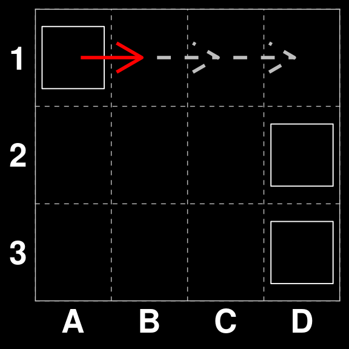
Board 2699 has two possible solutions. One scores higher than the other
B <- xmas3board(2699, c(3,4))
B| O · · · |
| · O · O |
| O · O O |gatai |> predict(B[1]) [1] "B2 to B3"We see that Gatai chooses the highest scoring move.
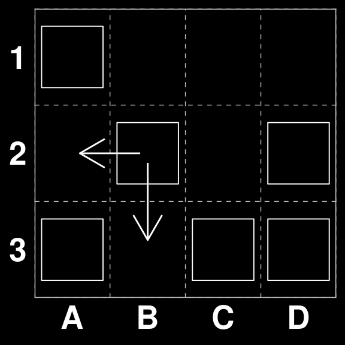
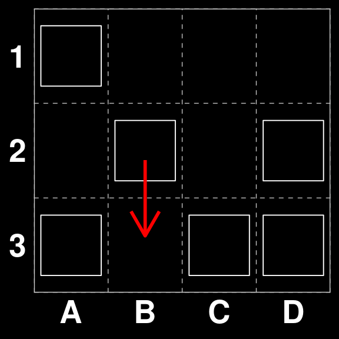
/\_/\
( $.$ )
> ^ <In it to win it, baby.We followed the same procedure as in the previous cases with similar results. As predicted the last model to converge was the one for the 3x6 grid. This took approximately 4 hours.